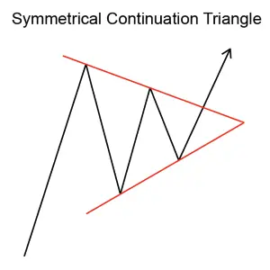
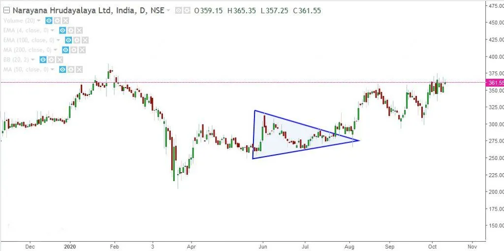

Implicaciones
Un triángulo de continuidad simétrica (bullish) se considera una señal bullish, indicando que la tendencia ascendente actual puede continuar.
Descripción
Un triángulo de continuidad simétrica (bullish) muestra dos líneas de tendencia convergentes, la inferior está subiendo, la superior está descendiendo. La formación se produce porque los precios están alcanzando altos y bajos más bajos. El patrón mostrará dos altos que tocan la línea de tendencia superior (descendente) y dos bajos que toquen la línea inferior (ascendente).
Este patrón se confirma cuando el precio se rompe de la formación de triángulo para cerrar por encima de la línea de tendencia superior (descendente).

Figura 11: Triángulo de continuidad simétrica (Bullish)
El volumen es un factor importante a tener en cuenta. Por lo general, el volumen sigue un patrón fiable: el volume debe disminuir a medida que el precio fluctúa hacia atrás y hacia adelante entre una gama cada vez más estrecha de altibajos y bajos. Sin embargo, cuando ocurre la brecha, debe haber un aumento notable en el volumen. Si esta imagen del volumen no es clara, los inversionistas deben ser cautelosos acerca de las decisiones basadas en este triángulo.
Características importantes
Las siguientes son características importantes para este patrón.
Ocurrencia de una breakout
Los analistas técnicos prestan atención a cuánto tiempo tarda el Triángulo en desarrollarse hasta su apogeo. La regla general es que los precios deberían estallar, penetrando claramente la línea de tendencia superior, en algún lugar entre tres cuartos y dos tercios de la anchura horizontal de la formación. La ruptura, en otras palabras, debería ocurrir mucho antes de que el patrón alcance el apogeo del Triángulo. Cuanto más cerca de la brecha ocurre al pico, menos fiable es la formación.
Duración del Triángulo
El Triángulo es un patrón relativamente a corto plazo. Mientras que los triángulos a largo plazo se forman, los más fiables tardan entre uno y tres meses.
Volumen
Los inversores deberían ver que el volumen disminuye a medida que el patrón avanza hacia el apogeo del Triángulo. En breakout, sin embargo, debe haber un aumento notable en el volumen.
Consideraciones de negociación
Duración del patrón
Considere la duración del patrón y su relación con sus horizontes de tiempo de negociación. La duración del patrón se considera como un indicador de la duración de la influencia de este patrón. Cuanto más tiempo
el patrón cuanto más tiempo dure para que el precio alcance su objetivo. Cuanto más corto sea el patrón, más rápido será el movimiento del precio. Si está considerando una oportunidad de comercio a corto plazo, busque un patrón con un corto
duración. Si está considerando una oportunidad de comercio a largo plazo, busque un patrón con una duración más larga.
Precio objetivo
El precio objetivo proporciona una importante indicación sobre el movimiento potencial de los precios que este patrón indica. Considere si el precio objetivo para este patrón es suficiente para proporcionar rendimientos adecuados después de que sus costos (como comisiones) se hayan tenido en cuenta. Una buena regla es que el precio objetivo debe indicar un retorno potencial de más del 5% antes de que un patrón se considere útil. Sin embargo, debe tener en cuenta el precio actual y el volumen de acciones que tiene la intención de negociar. También, compruebe que el precio objetivo ya no se ha alcanzado.
Inbound
Tendencia La tendencia de entrada es una característica importante del patrón. Una tendencia de entrada superficial puede indicar un período de consolidación antes de que comience el movimiento de los precios indicado por el patrón. Busque una tendencia de entrada que sea más larga que la duración del patrón. Una buena regla es que la tendencia de entrada debe ser al menos dos veces la duración del patrón.
Confirmar la breakout
Para evitar tomar una posición no aconsejable en una acción, algunos inversores aconsejan esperar unos días para determinar si la breakout señala que el precio está listo para moverse. Una señal clave de un posible movimiento falso es el bajo volumen. Si no hay un aumento en el volumen alrededor del brote, los inversores deben ser cautelosos. Por lo general, una buena breakout de una formación de Triángulo se acompañará de un aumento definitivo en el volumen.
Criterios que respaldan
Apoyo y resistencia
Busque una región de apoyo o resistencia alrededor del precio objetivo. Una región de consolidación de precios o una fuerte línea de apoyo y resistencia en o alrededor del precio objetivo es un indicador fuerte de que el precio se moverá a ese punto.
El precio se mueve por encima del nivel de resistencia
También puede comprobar que los precios que siguen el patrón se han cruzado por encima de un nivel de resistencia clave como la media móvil de 200 días. Esto proporcionaría una confirmación adicional de que la tendencia está a punto de continuar hacia arriba.
volumen
Un fuerte pico de volumen el día de la confirmación del patrón es un indicador fuerte en apoyo del potencial para este patrón. El pico de volumen debe estar significativamente por encima de la media del volumen durante la duración del patrón. Además, el volumen durante la duración del patrón debería estar disminuyendo en promedio.
Criterios que refuten
No hay aumento de volumen en la breakout
La falta de un pico de volumen el día de la confirmación del patrón es una indicación de que este patrón puede no ser fiable. Además, si el volumen ha permanecido constante, o estaba aumentando, durante la duración del patrón, entonces este patrón debe considerarse menos fiable.
Inbound corto
Tendencia Una tendencia de entrada que es significativamente más corta que la duración del patrón es una indicación de que este patrón debe considerarse menos confiable.
El precio se mueve por debajo del nivel de soporte
Si los precios de los patrones post han caído por debajo de un nivel clave de apoyo, como una media móvil de 200 días, esto podría ser un retroceso temporal (que es común) o tal vez un signo de que la señal de aumento anterior era en realidad una señal falsa - a veces llamada una trampa de toro. Cuando se encuentra un retroceso, una pista útil es mirar el volumen. Si el precio se retira en alto volumen, esto puede significar un fracaso del patrón de aumento original - a veces conduciendo a un juego de medallones potencialmente rentable. Si no hay mucho volumen, entonces podría ser simplemente un retiro temporal al nivel de breakout y los precios pueden cambiar de dirección y continuar hacia arriba después de todo.
Comportamiento subyacente
Este patrón es el resultado de las líneas de tendencia convergentes de apoyo y resistencia que dan a este patrón de Triángulo su forma distintiva. Esto ocurre porque la acción comercial se vuelve más y más apertada hasta que el mercado se rompe con gran fuerza. Los compradores y vendedores se encuentran en un período en el que no están seguros de dónde va el mercado. Su incertidumbre está marcada por sus acciones de compra y venta antes, haciendo que el rango de los movimientos de precios sea cada vez más estrecho. Como el intervalo entre los picos y los troughs que marcan la progresión de los precios se estrecha, las líneas de tendencia se encuentran en el "pico" situado a la derecha del gráfico.
La reducción de la acción comercial y la disminución del volumen del comercio reflejan la indecisión en el mercado. Finalmente se alcanza un consenso o decisión en el mercado y esto se refleja a medida que el precio se rompe del triángulo. Un aumento en el volumen en esta fecha de breakout refleja un consenso más fuerte de que el stock debería moverse en esa dirección.
